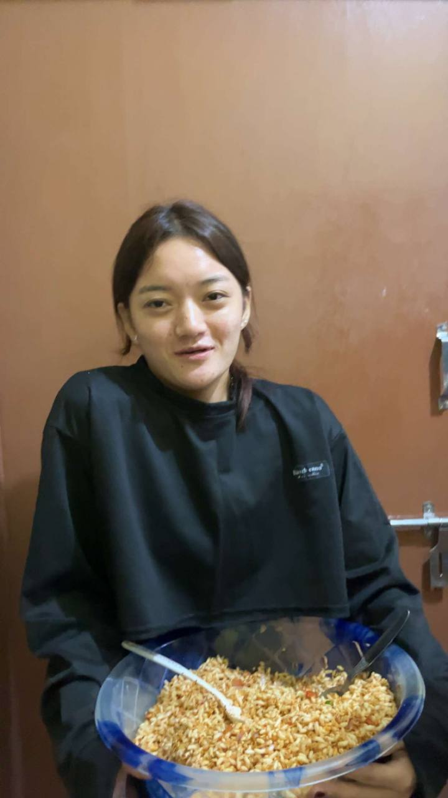
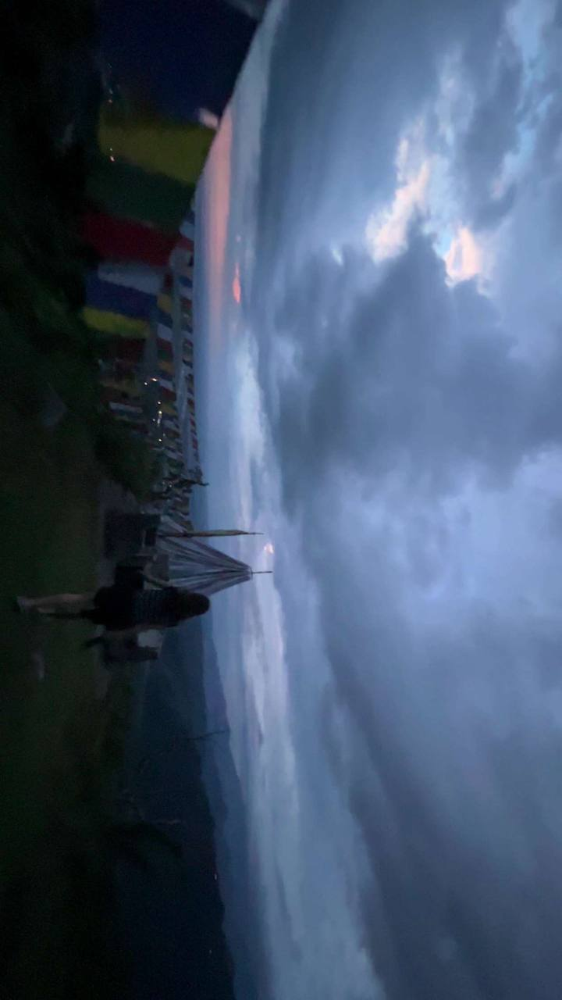
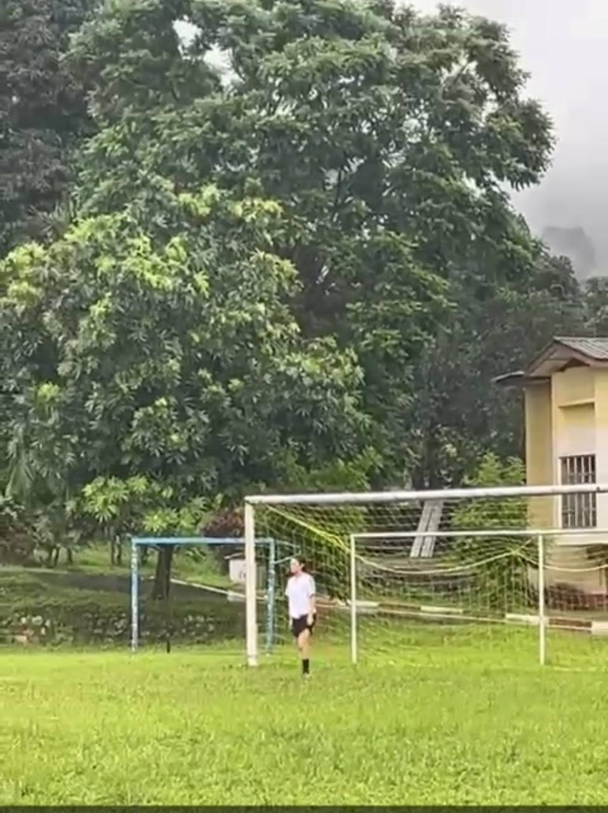
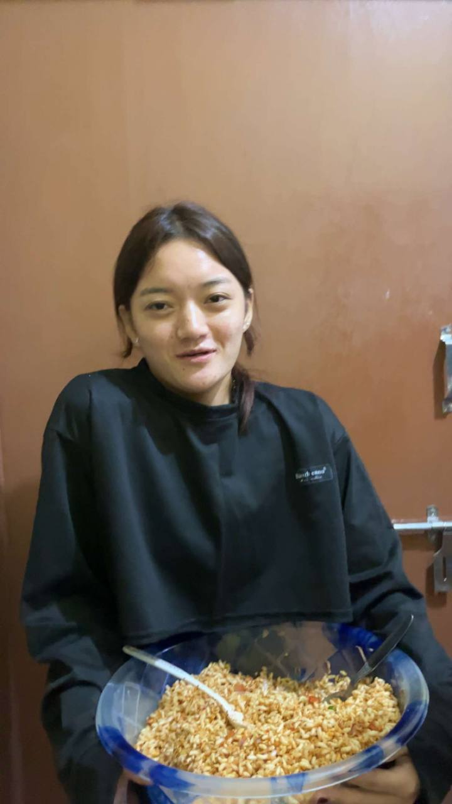
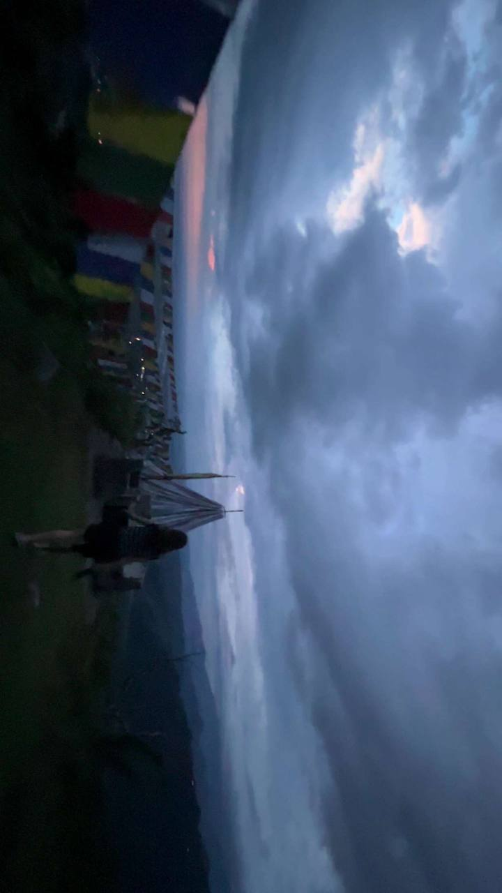
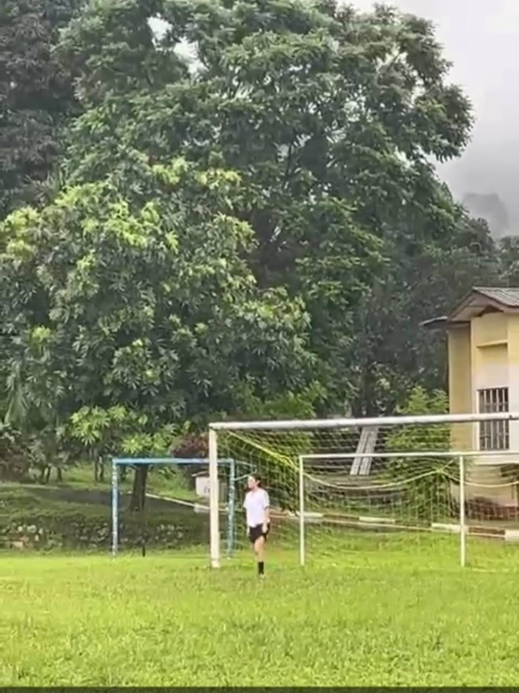

.jpeg) 





Hello! My name is Tashi Lhamo. I am currently pursuing a Bachelor of Education in Information Technology at Samtse College of Education. I enjoy reading motivational books, playing badminton in my free time, and exploring new experiences that inspire me.To talk about my educational journey and my drems,When I was nine years old, I used to say that I wanted to become a doctor, and that dream stayed with me until class ten. After reaching class eleven, I thought I would take the science stream, but unfortunately, I was placed in the arts stream. Many people said that being in this stream was just for fun, only to complete class twelve, and that there was no future in it. Hearing such things lowered my self-esteem, and I could not study well because I thought it was all worthless. However, some people encouraged me, saying that the arts stream could still lead to becoming a teacher if I performed well in the exams. Others said that if I chose Rigzhung, there was a chance of becoming a traditional doctor. With that hope, I chose Rigzhung with mathematics and tried my best to pursue my dream of becoming a traditional doctor. Becoming a teacher was never my option—I even used to say that teaching was the job I hated most. When I completed class twelve and the results were declared, I applied to all the RUB colleges. Sadly, I was rejected by every university. Fortunately, at the last moment, I got admission to Samtse College of Education (SCoE), which is a teacher training college. I had no other option but to join, as it was my last chance to attend college. I always said that teaching was the job I disliked the most, and I never imagined I would end up in this system. However, after experiencing the new environment and college life, I realized that it was not wrong to be here. In fact, I have become more eager to explore new things about this profession, and my perspective has started to change.To talk more about myself, I love being alone in my room with the lights off when there’s nothing to do. I also like to eat. My favorite game is badminton, but I always end up playing football instead. One thing I really enjoy is going for hikes, especially to see the night view. As for my studies, they come last — though they are probably the key to my future dreams.